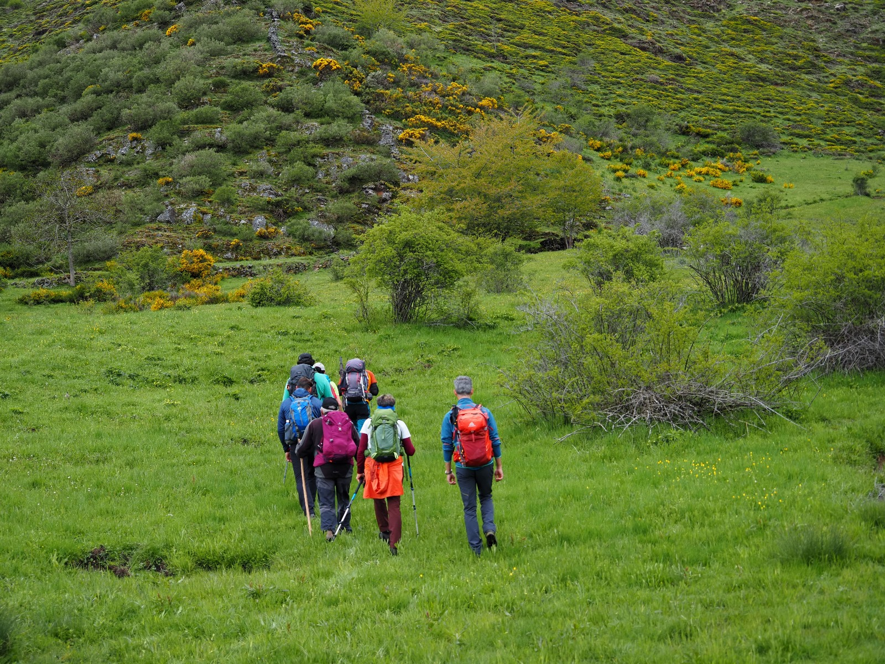

ACTIVIDADES DE MONTAÑA
3 maneras diferentes de disfrutar de la montaña
Senderismo

El senderismo es una actividad deportiva no competitiva que consiste en caminar siguiendo un itinerario determinado. Se acostumbra a realizar en senderos balizados y homologados por el organismo competente de cada país, pero también por sendas, caminos rurales y vías verdes sin homologar.
Escalada

La escalada es una actividad que consiste en realizar ascensos sobre paredes, valiéndose de la fuerza física propia. En la escalada hay alturas que implican un peligro considerable y con el objetivo de tener seguridad se utiliza equipo de protección.
Vía ferrata

Una vía ferrata es un itinerario tanto vertical como horizontal (franqueo) equipado con diverso material: clavos, grapas, presas, pasamanos, cadenas, puentes colgantes y tirolinas, que permiten el llegar con seguridad a zonas de difícil acceso para senderistas o no habituados a la escalada.